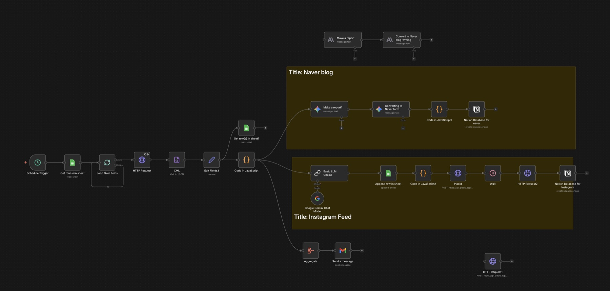

Overview
I designed and built an n8n workflow that ran on a schedule and checked financial-news sources, including the Financial Times and Yahoo Finance, together with selected finance-focused YouTube channels. When new articles or videos appeared, the workflow collected their links and source data, processed the material, and stored structured outputs in Notion.
The saved research then fed an AI-assisted content branch that generated copy and used Placid to create feed-ready images. A separate branch prepared longer-form material for Naver Blog, while Gmail notifications made each run easier to monitor.

The n8n workflow canvas. Click the image to view it at full size.
How the system was structured
What I learned
- Scheduled monitoring needs clear update checks so the same source is not processed repeatedly.
- Structured intermediate data is essential when AI output must feed JavaScript, Notion, and external APIs.
- Separating research collection from channel-specific production makes a long workflow easier to inspect and maintain.
Prototype and maintenance note
Previously operational as a prototype. Because it depends on several external services, renewed credentials or updated API configuration may be required before running it again.